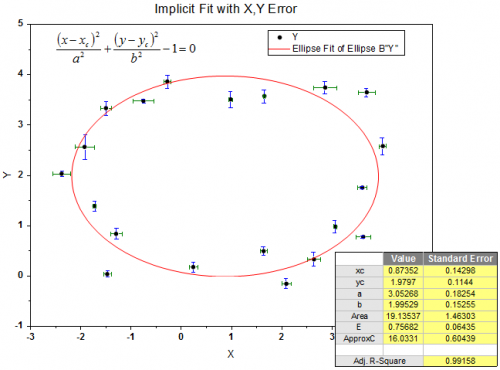

非線形陰関数カーブフィット（Proのみ）
Fitting-Implicit
OriginのNLFitツールは、X/Yエラーデータによるフィッティングを含む、直交距離回帰(ODR, orthogonal distance regression)アルゴリズムを使用した陰フィッティングをサポートしています。

陰関数（implicit function）でデータをフィットする場合、組み込まれている非線形陰関数カーブフィットを行うか、自分で陰フィット関数を作成します。
陰関数でフィットする
陰関数でフィットするには
- メニューから解析：フィット：非線形陰関数カーブフィットを選択してダイアログを開きます。
- Implicitカテゴリ内の関数を選択します。
| Note: 陰フィット関数は直交距離回帰（Orthogonal Distance Regression、ODR）を使用します。 |
/Tutorial_icon.png) |
ミニチュートリアル: 楕円をフィット
- \Samples\Curve FittingフォルダのEllipse.dat ファイルを単一ASCIインポートします。
- 列AとBを選択して、解析：フィット：非線形陰関数カーブフィットを選択してNLFitダイアログを開きます。
- 関数として、Ellipseを選択します。
- 「データ選択」を開き、ウェイトに「各範囲の設定を使用」が選択されていることを確認します。
- 「データ選択」の「入力データ」の項目を開き、「範囲1」を開きます。
- 「x」の下の「重み」に「任意データセット」を選択し、データとしてC(Weight X)を設定します。
- 「y」も同様に行い、データはD(Weight Y) を設定します。
- 「フィット」をクリックしてデータをフィットし、レポートシートを生成します。
|
2つ以上の変数を使用して陰関数フィットする
2つ以上の独立した関数を使用して陰フィットモードを実行する場合は、以下のポイントに注意してください。
- 入力データとしてワークシートデータを準備する必要があります。つまり、この場合、グラフからフィットを実行できません。
- 全ての変数に対して、入力データのフィットしたポイントが対応しています。NLFit ダイアログの選択肢を変更するには、設定タブ内にあるフィット曲線を開いてください。フィット曲線のプロットブランチを開き、変数のデータタイプを入力データのフィットしたポイントに設定します。
- これは、自動的にフィット曲線を作成するようにはなっていません。しかし、レポートシート内でフィット曲線用のデータを入手できます。
ユーザ定義の陰関数を作成してフィットを行う
自分でフィット用の陰関数を作成するには、まずフィット関数ビルダーを以下のどちらかで開きます。
- メニューから解析：フィット：非線形陰関数カーブフィットを選択してダイアログを開きます。
- 関数のドロップダウンリストで<新規>を選択します。
または
ツール：フィット関数ビルダーを選択するか、F8を押します。
フィット関数ビルダ―が開いたら、次の操作を行います。
- 新しい関数の作成のラジオボタンを選択して進むをクリックします。
- 関数モデルのグループで、陰関数のラジオボタンを選択します。
または
- メニューからツール: フィット関数オーガナイザ を選択、もしくはF9キーを押してフィット関数オーガナイザを開きます。
- 新しい関数をImplicitカテゴリ内に作成します。
陰関数でのフィットはImplicitカテゴリ内の関数しか使用できません。つまり、何か陰関数を作成した場合、フィット関数オーガナイザのImplicitカテゴリに移動する必要があります。
ユーザ定義関数を定義するにはOrigin ヘルプを参照してください。
|
以下はユーザ定義のフィット用陰関数を作成する方法とデータを実際にフィットする簡単なチュートリアルです。
- メニューからツール: フィット関数オーガナイザ を選択、もしくはF9キーを押してフィット関数オーガナイザを開きます。
- Implicitカテゴリを選択して関数作成ボタンをクリックします。
- 関数名にHyperbolic と入力し、関数モデルを陰にセットして定義形式ではEquationsを選択します。
- 変数ボックスにx,yと入力し、パラメータボックスにはa,b,c,d,eと入力します。
- 関数内容には、次のように入力します。
f=a*x^2+b*x*y+c*y^2+d*x+e*y-1;
fの値は0になるように推定されます。
- 保存ボタンをクリックして作成した関数を保存し、OKボタンをクリックするとダイアログを閉じます。
- 双曲線のトレンドがあるテストデータを準備し、Originにインポートします。フィット関数オーガナイザのシミュレートボタンをクリックすると、追加したノイズがある状態でデータを作成できます。
- 列Aをx、列Bをyとして設定します。
- A列とB列を選択し、解析：フィット：非線形陰関数カーブフィットと操作してNLFitダイアログを開きます。
- 関数ドロップダウンメニューから、Hyperbolic(User)を選択してフィットをクリックします。
|
| Note: どんなユーザ定義関数を使用してのフィットはパラメータの初期化を行う必要があります。双曲線（Hyperbolic）関数の場合、パラメータの値は1であれば、特に問題は無いはずです。 |